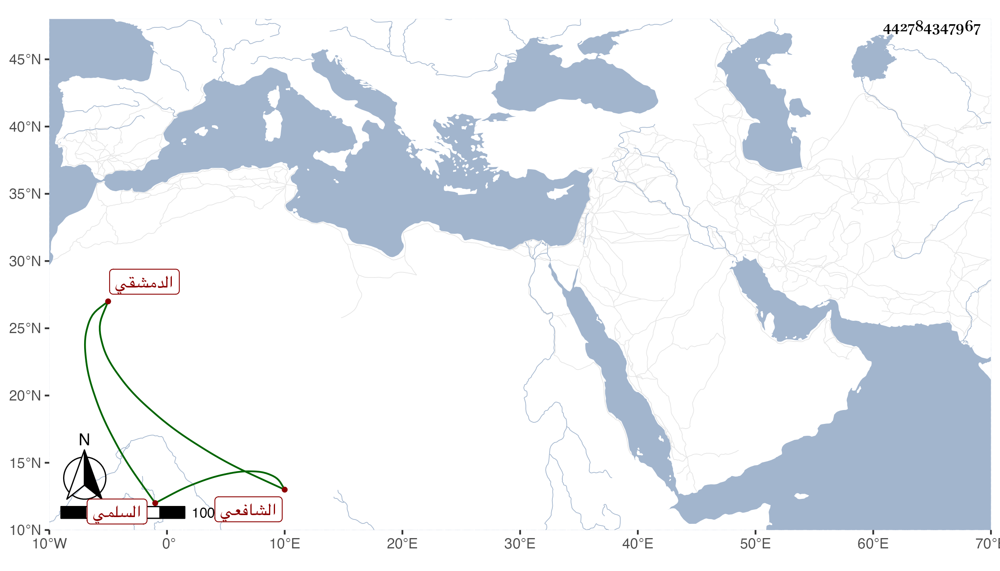

0902Sakhawi.DawLamic.ITO20230111-ara1.EIS1600.442784347967
Biography ID: 442784347967
251
محمد بن عبد الله بن موسى بن رسلان بن زين الدين موسى بن إدريس بن موسى بن موهوب البدر أبو عبد الله بن الجمال أبي محمد بن الشرف أبي البركات السلمي بضم المهملة الدمشقي الشافعي . ولد في ذي الحجة ليلة عرفة سنة ثلاث وخمسين وسبعمائة وأحضر وهو في الخامسة في عاشر رمضان سنة ثمان وخمسين على العماد بن كثير الحافظ منتقى من رابع حديث سعدان بسماعه على الحجار وسمع على محمد بن موسى بن سليمان بن الشيرجي جزء الأنصاري مع الفوائد وعلى الشمس محمد بن موسى بن سند الحافظ بعض المائة انتقاء العلائي من مشيخة الفخر ومن الشمس محمد بن محمد بن عبد الكريم الموصلي قصيدة من نظمه أولها : جوانحي لسواكم قط ما جنحت ومن الشمس الخفاف أيضا قصيدة من نظمه أولها : زارت فتاها وعقد الشعر محلول وحدث سمع منه الفضلاء وأسمع ابن ناصر الدين طلبته عليه بعض جزء الأنصاري ووصفه بالعلم والفضل . مات في ذي الحجة سنة سبع وثلاثين . أرخه شيخنا في إنبائه ولكنه لم يزد على محمد بن عبد الله الشيخ بدر الدين السلمي .
